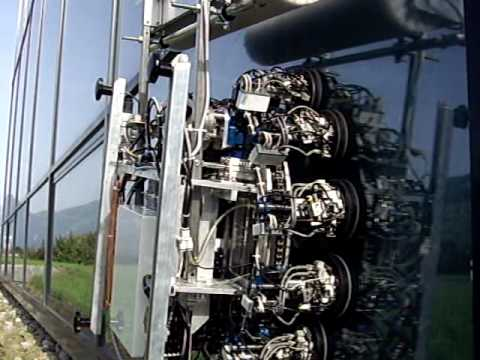
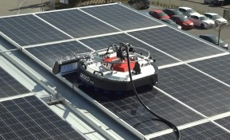

ROBOT GEKKO
¿Qué es el robot Gekko?
El robot GEKKO Solar está diseñado para limpiar paneles fotovoltaicos en tejados y pequeñas granjas solares. Es compacto y versátil y fácil de transportar de un lugar a otro. Por lo que se adecua perfectamente a las necesidades de empresas de limpieza, que ofrecen su servicio a los propietarios de plantas fotovoltaicas.

https://www.serbot.ch/es
Funciones y caracteristicas
La eficacia de los robots alcanza hasta 400 m2 por hora. Es una muy buena opción para las instalaciones de techo extendido, donde una limpieza a mano es difícilmente factible.
El robot GEKKO Solar limpia rigurosamente con sus cepillos rotativos y agua desmineralizada, ejecutando una presión constante sobre los paneles.
Por lo general, el sistema de apoyo del robot consiste en una plataforma de elevación, que coloca al robot en la parte superior del techo, el motor es dirigido a control remoto.
El abastecimiento de agua se efectua desde un pequeño carrito con un polipasto de unos 100m de longitud.
GEKKO Solar también es adecuado para pequeñas granjas solares con paneles angostos. En este caso, un carro de apoyo que suministra agua, energía eléctrica y aire asegura la operación independiente del mismo.

https://www.youtube.com/
Ventajas y beneficios
Alta eficiencia de limpieza: 4 veces más rápido que manualmente
Limpieza precisa: con calidad uniforme
Techos empinados incluidos: hasta 45°
Mejora la seguridad mejorada: no se realizan trabajos en la parte superior de los techos
Manejo sencillo: manejo con joystick y control remoto

https://www.serbot.ch/es
Video
https://www.serbot.ch/es